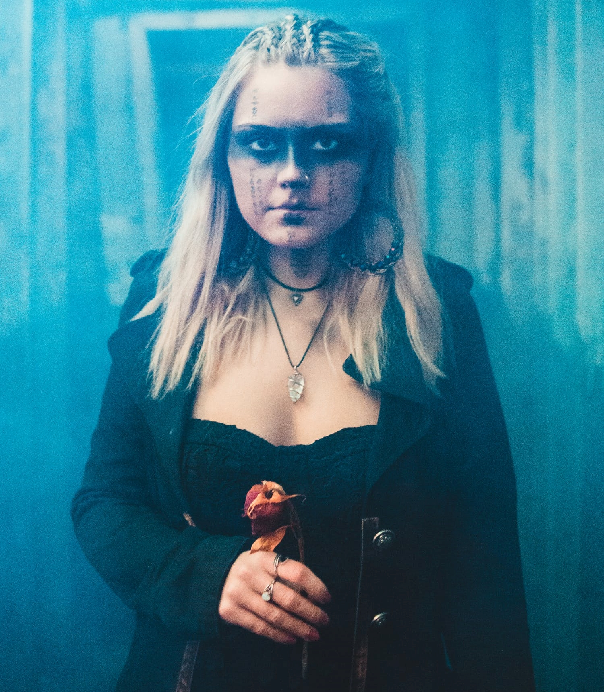

Los Magos y el amor
Los magos no suelen hacer pareja, en el sentido tradicional. Pero son capaces de amar y sentir una preferencia afectiva hacia determinada persona. Aman con todo su ser y son capaces de hacer grandes sacrificios por las personas a las que aman. Pero los magos entienden el amor de una manera diferente. Para ellos éste es una fuente de energía y poder. Pero también un vórtice capaz de consumir todo y empujarlos a las mayores desgracias. Es una energía primitiva y bruta, y sólo aprendiendo a dominarla y modelarla se puede usar su inagotable poder. Aprender esto no es fácil. Y es una de las grandes aventuras de aprendizaje en la vida de un mago.
